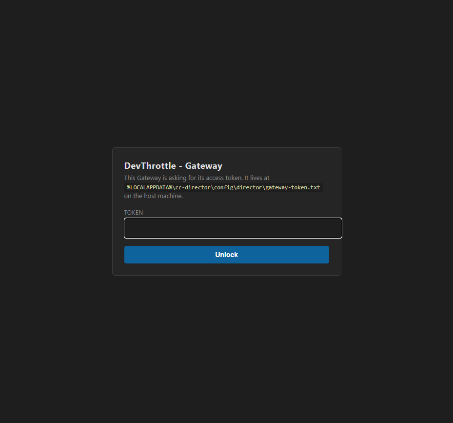
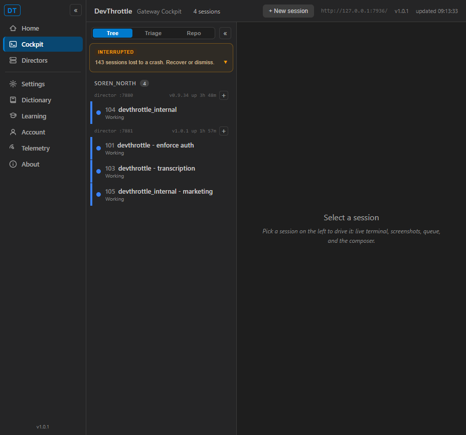

issue-920-cockpit-auth, PR #921./_blazor, /_framework, and session data is intact - it is made stricter on the browser Cockpit shell only, never weaker.
127.0.0.1:7936, auth gate ON by default (no CC_GATEWAY_NO_AUTH/CC_GATEWAY_AUTH override), CC_GATEWAY_NO_TAILSCALE=1, isolated CC_DIRECTOR_ROOT. Two real Director instance files copied in so live sessions aggregated (directors :7880 and :7881).127.0.0.1:7937, Cockpit__GatewayUrl=http://127.0.0.1:7936.cockpit920.HttpClient; in-browser statuses read from PerformanceResourceTiming.responseStatus.| Criterion | Result | Evidence (Expected vs Actual) |
|---|---|---|
AC1. Under enforcement, loading the Cockpit and signing in yields a fully working Cockpit: Blazor circuit connects, /_framework 200, session list + live data render, no 401 after login. |
PASS | Real browser: after login the roster rendered live ("4 sessions", real rows across directors :7880/:7881); the count updated live 5→4 across the circuit. In-browser network log: /_blazor/negotiate=200 (circuit connected), blazor.web.js=200, /_blazor/initializers=200, 401 count = 0, reconnect modal not shown; stable on a 12s re-check. Screenshot qa-02. |
| AC2. An unauthenticated Cockpit visit is driven to the login flow (not a dead shell). | PASS | Browser navigate to /cockpit with no cookie → redirected to /login?next=%2Fcockpit, login page rendered (screenshot qa-01). HTTP: GET /cockpit (Accept: text/html) → 302 /login?next=%2Fcockpit. Re-confirmed after an explicit /logout. |
AC3. Session-data / /_blazor calls still require the credential (401 without the cookie) - gate not weakened. |
PASS | No cookie/Bearer: /_blazor=401, /_blazor/initializers=401, /_framework/blazor.web.js=401, /sessions=401. In the same authenticated run, dropping the cookie returned those same three paths to 401. |
AC4. Regression: Phase 0 PASS surfaces still pass - /sessions 401-without / 200-with Bearer; /m + /healthz public. |
PASS | /sessions: 401 without, 200 with Bearer. /healthz: 200. /m: 404 (passed the gate - a gated path would 302/401; the mobile route is just not staged in the dev build). JSON /cockpit (no Accept: text/html): 200 (native app path stays public). |
| AC5. Full Gateway test suite green; a test covers the Cockpit auth path. | PASS | dotnet test CcDirector.Gateway.Tests: Passed! Failed: 0, Passed: 1196, including the 6 new CockpitAuthServingTests (login-redirect, JSON stays public, cookie passes the gate, /_blazor 401, /_framework 401, sessions/healthz regression). |

http://127.0.0.1:7936/cockpit with no cookie; URL became /login?next=%2Fcockpit, the DevThrottle Gateway login page rendered.
Full transcript: qa-http-transcript.txt (this folder).
The diff is minimal and correct: AuthMiddleware.cs de-publicizes only the exact /cockpit path for browser navigations (IsBrowserPageRequest: GET + Accept: text/html), leaving the JSON /cockpit program call public and the /_blazor + /_framework gating untouched. Cockpit/Program.cs adds the per-machine gateway token as a Bearer on the Cockpit's own server-side Gateway calls (a legitimate co-located caller, like a Director) - it opens no endpoint. No security_profile.yaml rule changed; no new public data endpoint. Phase 3/4/5 and other surfaces are out of scope and were not evaluated.
Harness note (not a product defect): CockpitSupervisor.KillOrphans() kills every process named devthrottle-cockpit machine-wide by name, so running a second MANAGED Gateway next to the user's live Gateway makes the two supervisors kill each other's Cockpit child. This is pre-existing supervision behavior unrelated to the #920 diff; QA verified around it by running the Cockpit unmanaged under a distinct process name, after which the circuit is stable.